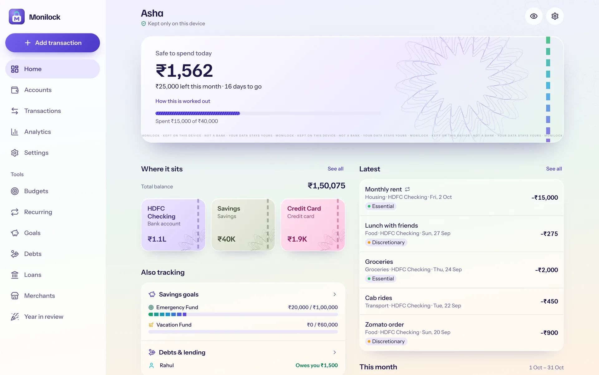

Five themes, five personalities — shape, type, density, motion and voice change, not just colour. Mudra stays the default. Open any prototype: each has a light/dark toggle and shows Home, Transactions, Add, Budgets and the desktop layout on identical data.

Banknote security printing. Frosted glass over lavender-mint-peach note paper, guilloche engraving, a colour-shift thread, denomination-tinted accounts. Luxe, calm and ornamental; one lavender accent.
The accountant’s ledger. Celadon columnar paper, blue-black ink, red margin rule. Compact, ruled, serif; rupees and paise in split columns.
Holi-powder pop. Sticker-bright, hard-shadowed, chunky; a colour per category and a price-tag burst on your budget.
Zero. No cards, no fills, almost no colour. Light-weight numerals, hairlines, air — and a month line that shows pace.
A kitchen garden. Leaf-cornered, soft and tactile; goals grow as plants, the hero sun tracks the month.